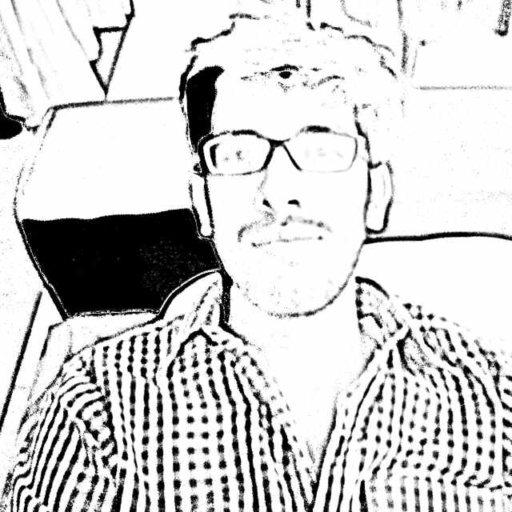

 Muhammad Haris: From DPS to LUMS, Navigating Life and the Ongoing Struggle
My All Time Test XI
- Imran Farhat
- Yasir Hameed
- Azhar Ali
- Muhammad Hafeez
- Asad Shafiq
- Shoaib Malik (c)
- Muhammad Rizwan (wk)
- Rana Naveed-ul-Hasan
- Umar Gul
- Zulfiqar Babar
- Tanveer Ahmad